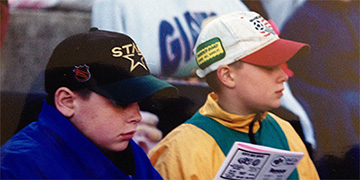

Next Race:
From it’s conception, Tomaino Motorsports has been built around a passion for racing with a strong focus on team work. The founder driver, Joey, has been enthralled in the sport since the days of matchbox cars and Ford Thunderbirds. His first live racing experience was in the mid-90's at the high banks of Barre, Vermont's Thunder Road. Accompanied with his younger brother, Dan, he was instantly hooked and began to dream about the day when he to would be logging laps on the famed quarter-mile bullring.

After his first few races of hard luck and flat tires, he was able to notch his first win in the Tiger Sportsmen Division for Tomaino Motorsports with his dad, Joe Jr., as his crew chief and his wife, Laura, as his spotter. From the very beginning it was always a family affair at the track.
With a track championship banner in the team's garage, it was time to expand the team with the addition of the #55 for Joey's brother, Dan. From there they team has found many level of success with awards, victories and championships. The team today has expanded to 7 cars which represents three generations, the racing series’s first female driver, and a former dirt-track champion.